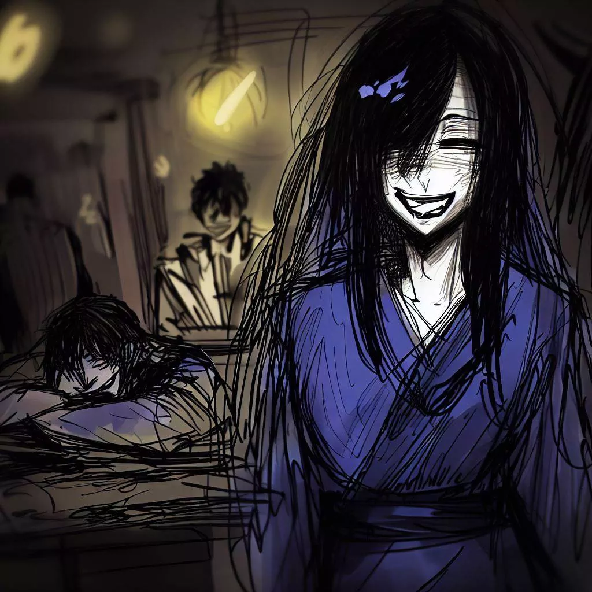

கோமாயோ: ஓகி விளையாட்டின் மாயாஜால ஒலிகள்
I want to say thank you to Komayo. She taught me a very interesting strategy game. I will tell our meeting. It is a memory that I really like and I want to share it here.
The Road to the Unknown
The day is over and I leave my job. I'm in Osaka and I breathe the fresh evening air. The city is calm and I feel peaceful.

I walk in the streets. The buildings are big and bright. They are beautiful at night.
I go through a lively neighborhood with restaurants and people talking. Even though I'm tired, I want to do something interesting. Then, I notice a bar called the Regency Bar. It's a place where people play shogi.
I feel a desire to enter the bar. I want to take up a challenge and relax a little.
The Game Bar
I enter the Regency Bar. It's a quiet place with soft light. People here are playing shogi.
I order a glass of sake. I look around. I smell the wood and incense. I hear the shogi pieces moving and people talking softly.
There are men and women of all ages playing shogi. They are focused on their game. They look happy, sad or nervous with each move.
I see a woman alone at a table. She is beautiful and calm. I am curious about her. I go to her, I smile and I ask her if she wants to play shogi with me.

A Different Game
She smiled when I asked to play.
She took out a game board. It was hidden under a cloth. I was surprised. The board was smaller than usual. It had fewer squares and pieces. Instead of having 9x9 squares like normal shogi, it had 8x8 squares. There were also only 18 pieces for each player. Before I could ask a question, she began to explain. She said this game was called ogi.

She talked about a special piece. It was the princess piece. She said that this piece made the game more dynamic. When she saw my surprise, she smiled. Then, she started placing the pieces on the board.
As she placed the pieces, I saw something different. There were towers in the corners of the board. She explained that these towers replaced the lances of the normal shogi.
When all the pieces were on the board, I was very excited. I really wanted to play this new game. And I wanted to know more about this mysterious woman.
The Game Test
The clock is ticking. The silence is only broken by the sound of the pieces moving on the board. The pieces move with determination. The princess leads the game. The silence of the game fills the room. It's very intense.
The woman plays very well. When she captured one of my pieces, she could put it back on the board to play it as one of her own pieces. Every move she makes is a lesson for me. She pays a lot of attention to each piece.
I keep playing. I move my pieces with a lot of energy. I defend my king. But with each move, I feel more tired. My eyes are getting heavy.
Finally, I can't stay awake anymore. I'm too tired. Everything is getting black. The last thing I see is the woman's smile. She is very happy.

A Surprising Awakening
I was asleep, lost in the dark. Then, little by little, I woke up. It was morning. I opened my eyes. The bar had hardly changed.
The game board was still there, just like the day before. But the woman was not there. She was gone. Her absence left a void. The bar was very quiet.
I saw a piece of paper next to the game board. I took the paper. There was a word on it: "Thank you". And a name: "Komayo". This name was the last memory of the woman. I had spent an amazing evening with her, playing ogi at the Regency Bar.